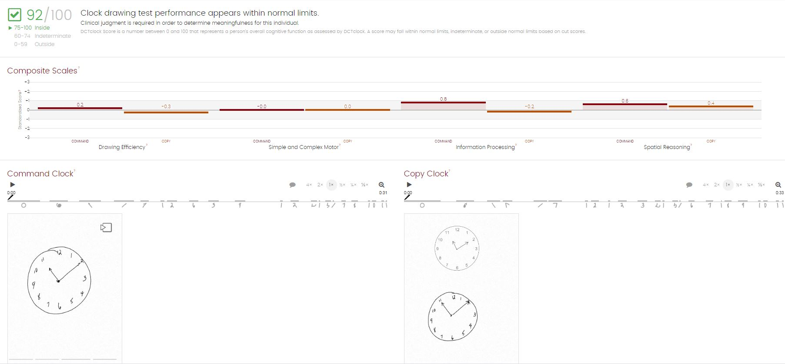

Patient Info
Recent Result
Past Results
Setup Test
Patient Ed
Literature
Example features:
Description of tests like Mini-Modal 3, Mini-Modal 5, Linus In-Clinic Battery, Linus Remote Battery, etc.
Guidance on how to interpret results, including links to studies
Billing guideliens
Note: Sadhvi can help craft the above
